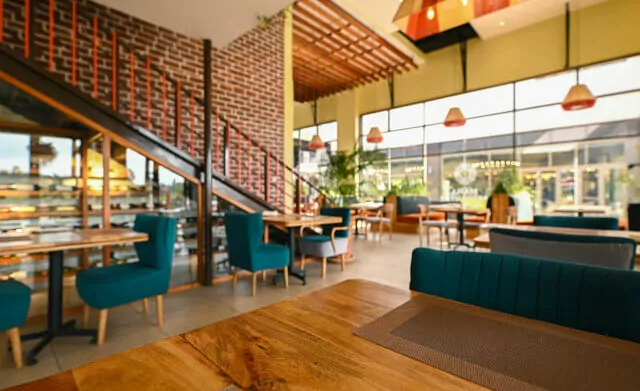

.jpg)
Bolo Restaurant will bring the rich flavours and cultural traditions of East Africa to the heart of Nairobi. Providing a unique dining experience for locals and tourists alike.
Our Identity

We are known for our delicious and authentic East African
dishes.Which are prepared using the freshest ingredients. At the
new Karen branch. Diners can expect to find a wide range of
mouth-watering dishes. Inspired by the diverse culinary traditions
of countries like Ghana, Senegal, and Nigeria. Moreover, some of
the standout dishes on our menu include jollof rice, eforiro, egusi,
pounded yam, light goat pepper soup (Ghanaian-style), okra &
seafood. These are sure to satisfy even the most discerning palate.
Our Amenities
Furthermore, our new kids menu features mild options. For the
little
ones to chow down before they run off to experience the
multiple
children’s activities available at the mall. The Guru
Lounge remains
the perfect tonic for a chill drink or two. Watching
the latest in
sports and entertainment. In addition to our delicious
food, we are
also known for our warm and inviting atmosphere.
Bolo Restaurant
Waterfront location features traditional East
African artwork and a
spacious beautifully decorated outdoor
seating area, perfect for
enjoying a meal in the warm Nairobi sun.
We also offer takeout and
delivery options for those who prefer to
enjoy their meals at home
or in the office.
.jpg)
Working hours
The Waterfront staff are dedicated to providing our customers with the best possible dining experience. We are open from Monday to Sunday 09:00hrs – 23:00hrs. Lunchtime is from 10:30 hrs – 15:30 hrs, and dinner time 17:30 hrs – 23:00 hrs.